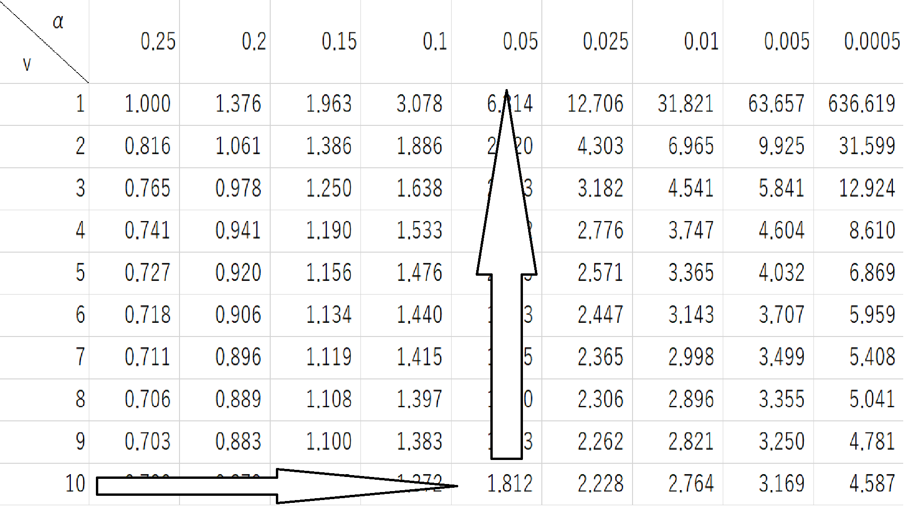

t分布とは、統計学的検定によく利用される分布で、分布の形は標準正規分布によく似ています。
t分布は、標準正規分布によく似ているが、標準正規分布に比べてt分布の方が少しだけ
ベル型の頂点の位置が低い
左右に広がる裾が厚い
という特徴があります。しかし、言葉だけではイメージが湧きにくいと思うのでグラフを見てみましょう。
t分布は、自由度と呼ばれるパラメータを持ち、自由度が大きくなるほど
ベル型の頂点の位置が高くなっていく
左右に広がる裾が薄くなっていく
自由度が大きくなるにつれて、標準正規に近づいていきます。つまり、t分布の自由度が十分に大きくなると、 標準正規分布に収束します。
よく使われる基準として、自由度が30以上のt分布は標準正規分布と同じと見なしてほぼ問題がない、というものがあります。
t分布の上側100αパーセント点 tv(α)
以下共通の設定として、自由度を10として進めます。
t=1.812のとき、t分布表において上側確率は0.05(5%)とわかります。

上側確率は、ExcelではT.DIST.RT関数で求めます。このとき、引数は次の通りになります。
T.DIST.RT(t,自由度)
ここでは0より小さなtの値を想定・・・具体的には t=-1.812とし、このｔの場合の下側確率 を求めます。
先程見せた分布表は上側確率のそれゆえにマイナスのtが載っていません。しかし、ここで扱うt分布が 左右に対称であることを顧みれば、便宣的にtの絶対値をとると、先のt分布表がそのまま使えます。
|t|=2.228のとき、t分布表において両側確率は0.05(5%;上側2つ分→2.5%×2)とわかります。
t分布における両側確率は、T.DIST.2T関数で求めます。このとき、引数は次の通りです。
T.DIST.2T(|t|,自由度)
p=0.05のとき、t分布表においてtは1.812とわかります。pが下側を指して言うなら -1.812とみなします。
片側（下側or上側）pに対するt（100×pパーセント点）は、T.INV.2T関数で求めます。このとき、
引数は次の通りです。
T.INV.2T(両側2*p,自由度)
※最初の引数は「両側2*p」であることに注意します。この関数は両側確率を要求します。
両側確率（2*p）=0.05のとき（→片側は両側の半分）、t分布表においてtは2.228とわかります。
両側2*pに対するパーセント点は、T.INV.2T関数で求めます。ただし、これにより返ってくるのは
0より大きな方のtのみです。この場合の引数は次の通りです。
T.INV.2T(両側2*p,自由度)